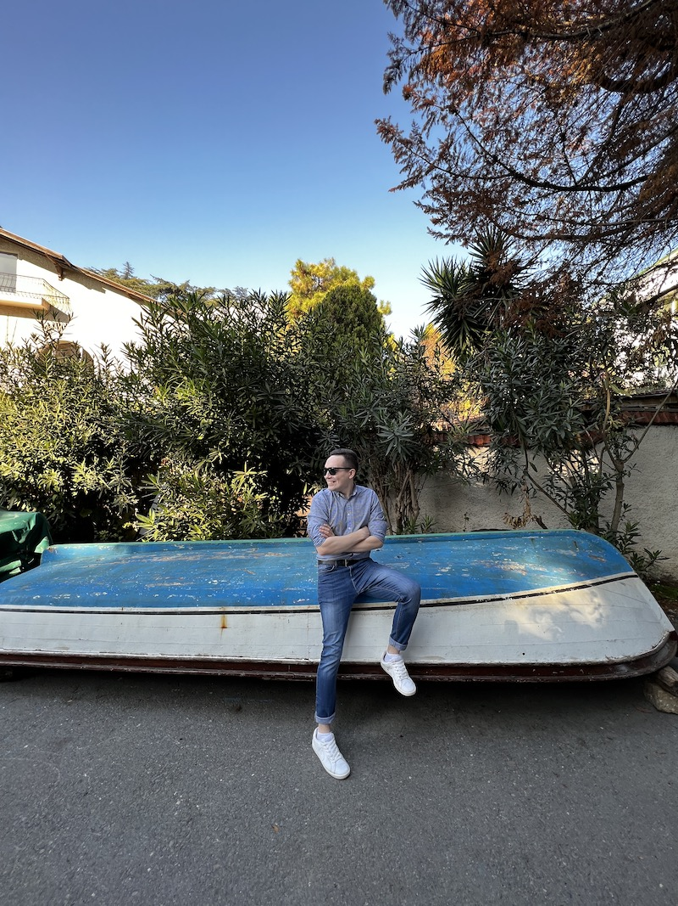

Я был нефтяником со степенью магистра, который решил уйти с
неприносящей удовольствие работы. Но я все тот же человек, которому
нравится путешествовать и узнавать что-то новое.
Факт обо мне? Знаю 5 различных доказательств теоремы Пифагора -
бесполезно, но факт.
Привет, я Максим!
Если ты видишь этот текст, значит в конце третьего дня обучения в
Elbrus Bootcamp я наконец создал свой первый сайт и решился
представить его на всеобщее обозрение.
Мне 27 лет, я из Арханегльска, учился в Москве, жил и работал в Нефтеюганске.
А теперь я один из 30 бобров (так называется наша группа, ничего личного), которые решили освоить новую для себя сферу и построить новую плотину на будущее.
Хочешь узнать что-то еще, просто пообщаться или даже предложить работу JS-разработчика?
Мои контакты ниже, будем на связи.
Мне 27 лет, я из Арханегльска, учился в Москве, жил и работал в Нефтеюганске.
А теперь я один из 30 бобров (так называется наша группа, ничего личного), которые решили освоить новую для себя сферу и построить новую плотину на будущее.
Хочешь узнать что-то еще, просто пообщаться или даже предложить работу JS-разработчика?
Мои контакты ниже, будем на связи.
